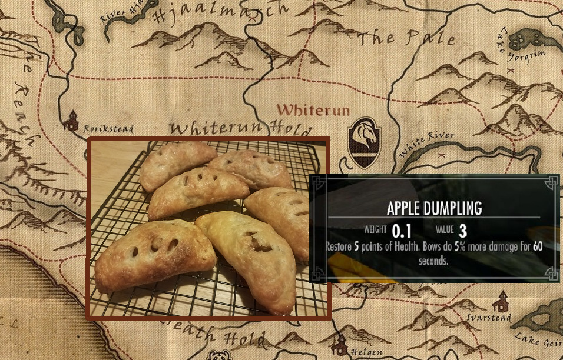

Apple Dumplings

Often found in private homes around Skyrim, these delicious but simple treats
are heartwarming after days spent on the open road and are often prepard by
loyal housecarls all through Tamriel. Come home to some toasty apple dumplings,
put your boots by the fire, and rest a while adventurer!
Ingredients
- You will need:
- 1 packet puff pastry sheets
- 1 half cup butter, melted
- 1 half cup brown sugar
- 6 large apples, peeled and diced
- 1 tsp ground cinnamon
- 1 tsp ground nutmeg
- 1 tsp vanilla essence
- 1 egg, for brushing
Directions
- Preheat your oven to 200C/392F. Roll out your pastry and cut into 5" squares
- Grease a baking tray well and set aside
- In a mixing bowl, combine your diced apples, spices, sugar, vanilla essence, and half the butter
- Mix well, and with a spoon, fill your pastries
- Fold the pastries into the centre at all four corners, pinch together in the centre
- Separate the dumplings on the baking tray so they do not stick together
- Brush your dumplings with the remaining butter and egg glaze
- bake for 30-45 minutes, or until well browned
- Remove from the oven to cool. Serve plain or drizzle with maple syrup
This cozy treat is certainly better than an arrow to the knee.